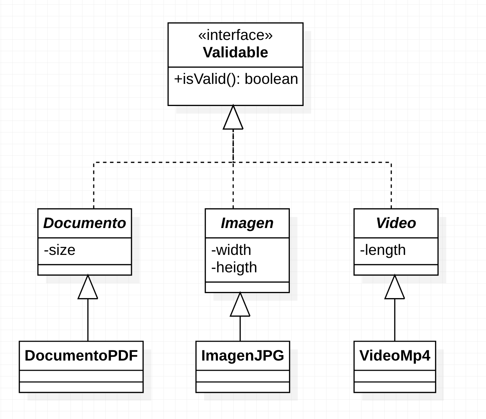

Ejercicio 1
Se necesita implementar un servicio de validación de ficheros. Todo fichero que se pueda validar deberá implementar una interfaz, llamada Validable, que tendrá un método cuya firma será boolean isValid(). La validación depende del tipo de fichero en cuestión. Solamente se podrán validar clases de tipo Documento, Imagen y Video.
Se tendrán 3 clases abstractas y no selladas, llamadas Documento, Imagen y Video. Para cada una de ellas se necesitará un constructor con argumentos y los métodos getter/setter.
- De los documentos queremos saber el tamaño en bytes.
- De las imágenes queremos saber el ancho y alto.
- De los vídeos queremos saber su duración en segundos.
Se deben crear las siguientes subclases concretas:
DocumentoPDF→DocumentoImagenJPG→ImagenVideoMp4→Video
Aquí tenemos un diagrama UML que ilustra esta estructura.

- Un
DocumentoPDFes válido si su tamaño es inferior a 1 megabyte. - Una
ImagenJPGserá válida si su tamaño (anchoxalto) es menor a 5 megapíxeles (5 millones) - Un
VideoMp4será válido si su duración es menor a 5 minutos.
El servicio de validación será capaz de validar múltiples ficheros a la vez, de forma que:
- Tendrá un array de ficheros a validar, con varios constructores.
- Tendrá un método que será capaz de validar todos los ficheros.
- Devolverá
truesi todos son válidos,falseen otro caso. - Tendrá un método estático que será capaz de validar un único fichero.
Implementar una clase main de prueba con algunos datos de ejemplo.
La solución del ejercicio está disponibles en: Soluciones ejercicio 1
Ejercicio 2
En mi barrio hay una ferretería donde el dependiente es muy “apañao”. Además de vender tornillos, herramientas y demás, también te hace algunas chapuzas en casa si es que tú no sabes hacerlas. Me ha pedido ayuda para implementar un pequeño sistema de facturación.
Tanto las chapuzas como los productos son elementos que comparten en común que se pueden “vender”, así que vamos a crear una interfaz llamada Vendible, que tendrá un método con la siguiente firma: double getPrecio().
Se pueden vender tanto Producto como Servicio, con las siguientes especificaciones:
- De cada
Productoqueremos saber el nombre y la categoría (ambosString). - De cada
Servicioqueremos saber el nombre, el tipo y la duración en minutos.
Para calcular el precio, lo haremos de la siguiente forma:
- De cada
Producto, almacenaremos el precio como un atributo. - Para los
Servicio, el precio se calculará de la siguiente forma, dependiendo del valor del atributotipo:- Si es
"PINTURA", será a 0.75€ el minuto. - Si es
"ELECTRICIDAD"será a 1€ el minuto. - Si es
"FONTANERÍA"será a 1.25€ el minuto. - Si es otro, será a 1.5€ el minuto.
- Si es
Para poder cobrarle a un cliente, nos pide que le hagamos una clase Factura, que tendrá el nombre del cliente así como un array de Vendible. También tendrá un método que permitirá calcular la suma total de productos y servicios facturados.
Implementa además una clase Main con algunos datos de ejemplo.
La solución del ejercicio está disponibles en: Soluciones ejercicio 2
Ejercicio 3
Sea el siguiente diagrama UML:

Necesitamos implementar el reproductor multimedia de un coche, que puede reproducir ficheros de múltiples tipos, pero no de cualquiera. Como queremos que nuestro modelo sea extensible, seguiremos los siguientes pasos:
- Crearemos una interfaz, llamada
Fichero, para modelar cualquier tipo de archivo. Esta interfaz tendrá los dos métodos abstractos del diagrama. - Como la implementación será muy común a todos los ficheros, crearemos una clase base abstracta, llamada
FicheroAbstracto, que tendrá como estado dos atributos: nombre y formato, y que implementará la interfazFichero. - Por otro lado, tenemos la interfaz
Reproducible, que extiende aFichero(todo reproducible será un fichero). Esta interfaz tendrá dos métodos:void reproducir()yint getDuracion(), que devuelve la duración en segundos. - Vamos a crear varios tipos de ficheros:
FicheroPDF, que no tendrá más métodos que el constructor con argumentos.ImagenJPG,AudioMp3yVideoH264, que además de extender la clase baseFicheroAbstractoimplementa Reproducible.
- Por otro lado, para que nuestro reproductor multimedia sea lo más genérico posible y así lo podamos portar de la plataforma del coche actual a otras, vamos a crear una interfaz llamada
Reproductor, con los siguientes métodos:void cargar(Reproducible r)que carga el fichero a reproducir.void reproducir()que reproduce el fichero cargadodefault void reproducir(Reproducible r)que reproduce el fichero que se pasa como argumento. Le daremos una implementación por defecto.void parar()que para la reproducción actual.
- La interfaz
Reproductorse verá implementada por la claseReproductorMultimedia, que tendrá un fichero reproducible actual y aceptará un array de ficheros reproducibles (una especie de playlist).
Se deben crear todas las clases anteriores y un main de prueba.
La solución del ejercicio está disponibles en: Soluciones ejercicio 3
Ejercicio 4
Estamos pensando en implementar un sitio web en el que se puedan realizar valoraciones y comentarios sobre cualquier cosa: productos, servicios, lugares, … Los usuarios podrán realizar valoraciones. Para ello vamos a definir la siguiente estructura de clases:
- La interfaz
Valorableserá implementada por aquellas clases que puedan ser valoradas. Tendrá un método que devolverá la puntuación media de todas las valoraciones. - La clase
Usuario, que serán quienes realicen las valoraciones. - La clase
Valoraciontendrá un usuario, un valorable y una puntuación (entero del 1 al 5). - La clase
ValorableAbstractoimplementará la interfazValorabley tendrá un array de elementos de tipoValoracion, con todas las valoraciones de dichoValorableAbstracto. Proporcionará una implementación por defecto para el cálculo de la puntuación media. - La clase
Usuariotambién tendrá un array con todas lasValoraciones que haya hecho el usuario. - Las clases
Producto,NegocioyCiudadextenderán aValorableAbstractoañadiendo los atributos propios que nos dicte la lógica. - Por último, la clase
ServicioValoraciontendrá un método llamadovalorarque recibirá tres argumentos:- Un usuario, que realiza la valoración.
- Un
Valorable, sobre el que emitir la valoración. - Una puntuación entre 1 y 5.
- Este método tendrá que:
- Crear el elemento de tipo
Valoracion. - Almacenarlo en el array de Usuario.
- Si el tipo de
Valorableque se ha proporcionado como argumento esValorableAbstracto, almacenarlo en el array de valoraciones del mismo.
- Crear el elemento de tipo
Implementa todos los métodos que creas necesarios y además, un main de prueba.
La solución del ejercicio está disponibles en: Soluciones ejercicio 4
Ejercicio 5
Vamos a mejorar el ejercicio 1. Ahora mismo, al validar todos los documentos, podemos saber si todos son válidos o no, pero nos podría interesar saber cuáles son los que han fallado. Para ello, realiza los siguientes cambios en ServicioValidacion:
- Agrega un método que permita añadir ficheros al array de elementos a validar. Esto se debe hacer de forma consistente, de manera que si al agregar, no caben más elementos en el array, se debe copiar en uno más amplio. Además, cada vez que se agregue un fichero, se debe incrementar la variable
cantidadValidables. - Agrega el método inverso, que permita eliminar un fichero del array de validables. Esta eliminación se hará por posición dentro del array. El array debe quedar en estado consistente.
- A la hora de realizar la validación de todos los documentos, se almacenará un array de valores booleanos, que tendrá como tamaño
cantidadValidables, y que almacenarátrueofalseen función del resultado de la validación. Debes añadir un método cuya firma seráboolean[] getDetalleValidacion(). De esta forma, si en la posición 2 del array tenemos un valorfalsees porque en la posición 2 del arrayvalidablestenemos un fichero no válido. - Añade otro método,
mostrarDetalleValidacion()que muestre por consola el detalle de validación de cada fichero. Usando pattern matching, debe mostrar, para cada tipo de fichero conocido, los datos que lo identifican.
Ejercicio 6
Vamos a mejorar el ejercicio 2 ya que el ferretero de mi barrio ha visto que su negocio ha prosperado con nuestra aplicación de gestión. Para ello, quiere implementar una clase Catalogo, donde poder añadir tanto los productos como los servicios, que se almacenarán en un array de Vendible. Esta clase tendrá los típicos métodos para añadir un Vendible al catálogo, para borrarlo por su posición en el array y para mostrar la información del catálogo, a través de dos métodos:
- void mostrarInformacionIndividual(Vendible v): deberá mostrar la información de lo que se vende, de forma que:
- Si es un Producto, se mostrará el nombre, la categoría y el precio.
- Si es un Servicio, se mostrará el nombre, el tipo y la duración.
- void mostrarInformacionCatalogo(), que mostrará la información de todos los Vendibles del catálogo.
Modifica el método main para crear un catálogo con varios Vendible y utiliza los métodos de la clase para mostrarlos por consola.
Ejercicio 7
Vamos a mejorar el ejercicio 3 de la siguiente forma:
- Si te das cuenta en el diagrama, todas las clases que implementan
Reproducibletambién extienden aFicheroAbstractoy en ellas hemos repetido algún elemento, como tener una duración almacenada (al menos en 2 de ellas es variable, y en otra constante). Crea una nueva clase abstracta, llamadaFicheroReproducibleAbstracto, que implementeReproducibley proponga una implementación por defecto para los métodos de la interfaz. Modifica las clasesImagenJPG,AudioMp3yVideoH264para que extiendan aFicheroReproducibleAbstractoy ajusta su implementación. - En nuestro
ReproductorMultimediano podemos pasar al siguiente o anterior reproducible de la lista. Añade los métodosvoid siguiente()yvoid anterior()de manera que:- Se parece la reproducción actual.
- Se cargue el siguiente elemento del array en
actual - Se comience su reproducción.
- Ten en cuenta que la lista de reproducción es circular, es decir:
- El siguiente al último es el primero.
- El anterior al primero es el último.
Ejercicio 8
Vamos a mejorar el ejercicio 4 de forma que:
- Se garantice que las valoraciones son de entre 1 y 5.
- Se gestione la posibilidad de agregar más de 10 valoraciones por producto/usuario.
- Se garantice que un mismo usuario no puede valorar más de una vez el mismo valorable.
- Además de poder valorar numéricamente, que los usuarios puedan añadir un único comentario. Para esto último, ¿dónde crees que deberíamos empezar la modificación? ¿Crees que sería bueno crear una interfaz
Comentable?